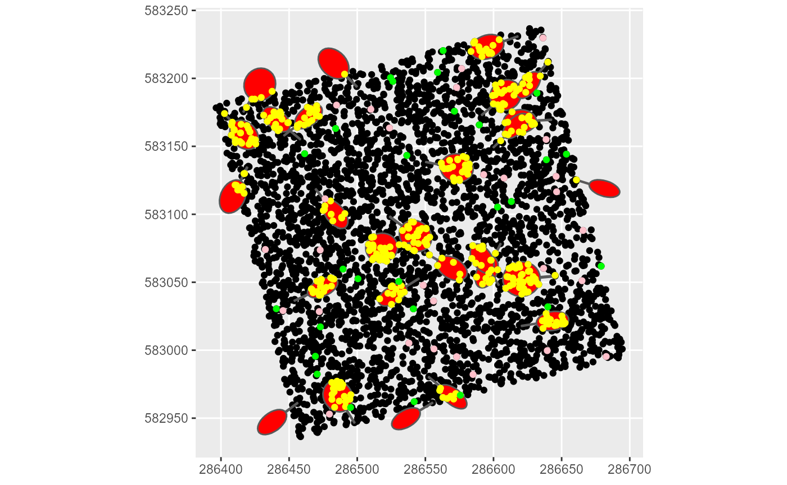
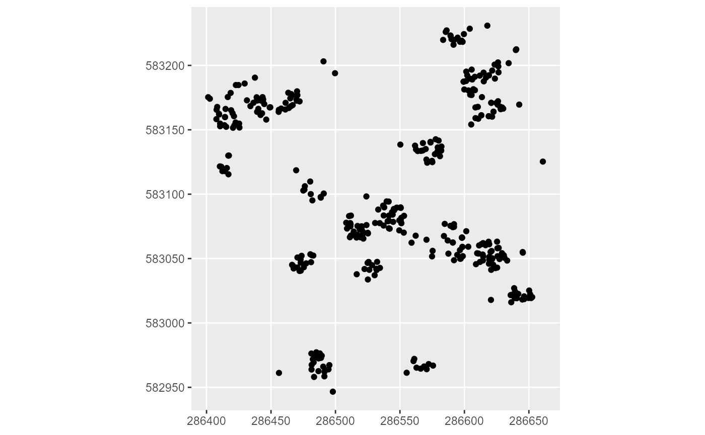
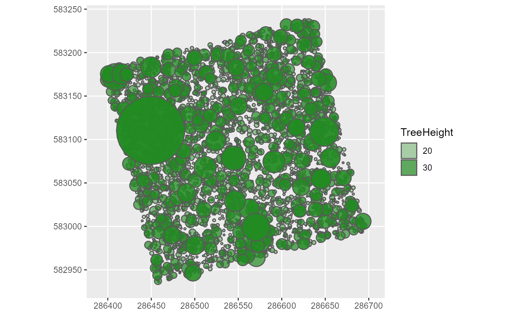
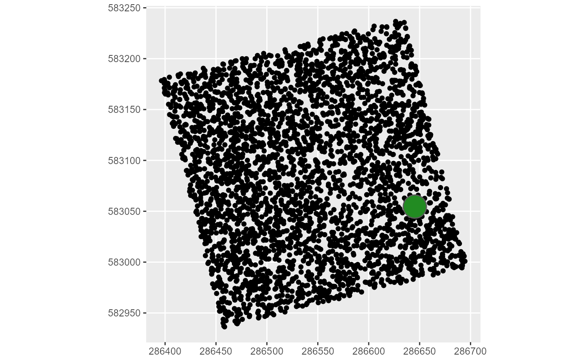

Install Maria
install.packages("Maria")Load the package
library(Maria)
#> Welcome to the ForestLogging package.
library(knitr)
library(kableExtra)
library(ggplot2)Load the two datasets stored in the package
# 2016 inventory of Paracou (French Guiana) plot 6
data(Paracou6_2016)
# Table of species exploitability criteria
data(SpeciesCriteria)
# Volume parameters table
data(ForestZoneVolumeParametersTable)
# Crown diameter allometry parameters table
data(ParamCrownDiameterAllometry)
# Digital terrain model (DTM) of the plot 6 of Paracou (1m resolution, LiDAR campaign of 2016)
data(DTMParacou)
# Slopes (in radians) of the plot 6 of Paracou (with a neighbourhood of 8 cells)
data(PlotSlope)
# inventory class
class(Paracou6_2016)
#> [1] "data.frame"
#The name and class of all the data variables
lapply(Paracou6_2016, class)
#> $Forest
#> [1] "character"
#>
#> $Plot
#> [1] "character"
#>
#> $PlotArea
#> [1] "numeric"
#>
#> $SubPlot
#> [1] "integer"
#>
#> $idTree
#> [1] "integer"
#>
#> $Protocole
#> [1] "character"
#>
#> $Xfield
#> [1] "numeric"
#>
#> $Yfield
#> [1] "numeric"
#>
#> $Xutm
#> [1] "numeric"
#>
#> $Yutm
#> [1] "numeric"
#>
#> $UTMZone
#> [1] "integer"
#>
#> $Lat
#> [1] "numeric"
#>
#> $Lon
#> [1] "numeric"
#>
#> $Family
#> [1] "character"
#>
#> $Genus
#> [1] "character"
#>
#> $Species
#> [1] "character"
#>
#> $BotaSource
#> [1] "character"
#>
#> $BotaCertainty
#> [1] "numeric"
#>
#> $VernName
#> [1] "character"
#>
#> $CensusYear
#> [1] "integer"
#>
#> $CensusDateCertainty
#> [1] "logical"
#>
#> $CodeAlive
#> [1] "logical"
#>
#> $MeasCode
#> [1] "integer"
#>
#> $Circ
#> [1] "numeric"
#>
#> $CircCorr
#> [1] "numeric"
#>
#> $CorrCode
#> [1] "character"
Paracou6_2016 %>%
dplyr::slice(1:10) %>%
kable() %>%
kable_styling(font_size = 10, latex_options = "scale_down")| Forest | Plot | PlotArea | SubPlot | idTree | Protocole | Xfield | Yfield | Xutm | Yutm | UTMZone | Lat | Lon | Family | Genus | Species | BotaSource | BotaCertainty | VernName | CensusYear | CensusDateCertainty | CodeAlive | MeasCode | Circ | CircCorr | CorrCode |
|---|---|---|---|---|---|---|---|---|---|---|---|---|---|---|---|---|---|---|---|---|---|---|---|---|---|
| Paracou | 6 | 6.25 | 1 | 100726 | Guyafor | 13.5 | 201.0 | 286420.1 | 583135.4 | 22 | 5.272669 | -52.92713 | Annonaceae | Oxandra | asbeckii | Bota | 4 | muamba | 2016 | TRUE | TRUE | 0 | 39.5 | 39.5 | 0 |
| Paracou | 6 | 6.25 | 1 | 100729 | Guyafor | 19.0 | 196.5 | 286426.4 | 583132.2 | 22 | 5.272642 | -52.92707 | Fabaceae | Eperua | grandiflora | Bota | 4 | Eperua grandiflora | 2016 | TRUE | TRUE | 0 | 114.0 | 114.0 | 0 |
| Paracou | 6 | 6.25 | 1 | 100739 | Guyafor | 13.5 | 182.0 | 286424.8 | 583116.8 | 22 | 5.272502 | -52.92709 | Fabaceae | Bocoa | prouacensis | Bota | 4 | boco | 2016 | TRUE | TRUE | 0 | 48.0 | 48.0 | 0 |
| Paracou | 6 | 6.25 | 1 | 100741 | Guyafor | 9.5 | 179.5 | 286421.6 | 583113.4 | 22 | 5.272471 | -52.92712 | Celastraceae | Maytenus | sp.1-CAY | Bota | 3 | lebi tongo | 2016 | TRUE | TRUE | 0 | 123.0 | 123.0 | 0 |
| Paracou | 6 | 6.25 | 1 | 100747 | Guyafor | 14.5 | 167.5 | 286429.3 | 583102.9 | 22 | 5.272376 | -52.92705 | Chrysobalanaceae | Licania | membranacea | Bota | 4 | santi koko | 2016 | TRUE | TRUE | 0 | 54.0 | 54.0 | 0 |
| Paracou | 6 | 6.25 | 1 | 100750 | Guyafor | 18.0 | 169.0 | 286432.3 | 583105.2 | 22 | 5.272397 | -52.92702 | Chrysobalanaceae | Licania | canescens | Bota | 4 | santi koko | 2016 | TRUE | TRUE | 0 | 88.0 | 88.0 | 0 |
| Paracou | 6 | 6.25 | 1 | 100760 | Guyafor | 20.5 | 147.0 | 286440.2 | 583084.3 | 22 | 5.272208 | -52.92695 | Annonaceae | Oxandra | asbeckii | Bota | 4 | muamba | 2016 | TRUE | TRUE | 0 | 45.0 | 45.0 | 0 |
| Paracou | 6 | 6.25 | 1 | 100769 | Guyafor | 10.5 | 139.0 | 286432.6 | 583074.1 | 22 | 5.272116 | -52.92702 | Goupiaceae | Goupia | glabra | Bota | 4 | goupi | 2016 | TRUE | TRUE | 0 | 161.5 | 161.5 | 0 |
| Paracou | 6 | 6.25 | 1 | 100771 | Guyafor | 20.0 | 133.5 | 286443.0 | 583071.0 | 22 | 5.272088 | -52.92692 | Lecythidaceae | Eschweilera | decolorans | Bota | 4 | maho noir | 2016 | TRUE | TRUE | 0 | 94.5 | 94.5 | 0 |
| Paracou | 6 | 6.25 | 1 | 100778 | Guyafor | 30.0 | 205.5 | 286434.7 | 583143.6 | 22 | 5.272745 | -52.92700 | Chrysobalanaceae | Licania | laxiflora | Bota | 4 | santi koko | 2016 | TRUE | TRUE | 0 | 40.0 | 40.0 | 0 |
# speciescriteria class
class(SpeciesCriteria)
#> [1] "tbl_df" "tbl" "data.frame"
#The name and class of all the data variables
lapply(SpeciesCriteria, class)
#> $VernName
#> [1] "character"
#>
#> $Genus
#> [1] "character"
#>
#> $Species
#> [1] "character"
#>
#> $Commercial
#> [1] "factor"
#>
#> $MinFD
#> [1] "numeric"
#>
#> $UpMinFD
#> [1] "numeric"
#>
#> $MaxFD
#> [1] "numeric"
#>
#> $Aggregative
#> [1] "logical"
kable(SpeciesCriteria)| VernName | Genus | Species | Commercial | MinFD | UpMinFD | MaxFD | Aggregative |
|---|---|---|---|---|---|---|---|
| st martin rouge | Andira | spp | 2 | 55 | 60 | 120 | FALSE |
| bamba apici | Aniba | spp | 2 | 55 | 60 | 120 | FALSE |
| bagasse | Bagassa | guianensis | 2 | 55 | 60 | 120 | FALSE |
| assao | Balizia | pedicellaris | 2 | 55 | 60 | 120 | FALSE |
| dokali | Brosimum | parinarioides | 2 | 55 | 60 | 120 | FALSE |
| satiné rubané | Brosimum | rubescens | 2 | 55 | 60 | 120 | FALSE |
| dokali mapa | Brosimum | utile | 2 | 55 | 60 | 120 | FALSE |
| bushi amanda | Buchenavia | spp | 2 | 55 | 60 | 120 | FALSE |
| carapa | Carapa | guiansensis | 2 | 55 | 60 | 120 | FALSE |
| carapa | Carapa | surinamensis | 2 | 55 | 60 | 120 | FALSE |
| chawari | Caryocar | glabrum | 2 | 55 | 60 | 120 | FALSE |
| chawari | Caryocar | microcarpum | 2 | 55 | 60 | 120 | FALSE |
| balata pomme | Chrysophyllum | pomiferum | 2 | 55 | 60 | 120 | FALSE |
| balata pomme | Chrysophyllum | sanguinolentum | 2 | 55 | 60 | 120 | FALSE |
| baaka mapa | Couma | guianensis | 2 | 55 | 60 | 120 | FALSE |
| maho cigare | Couratari | spp | 2 | 55 | 60 | 120 | FALSE |
| angélique | Dicorynia | guianensis | 1 | 55 | 60 | 120 | TRUE |
| coeur dehors | Diplotropis | purpurea | 2 | 55 | 60 | 120 | FALSE |
| gaiac de cayenne | Dipteryx | odorata | 2 | 55 | 60 | 120 | FALSE |
| gaiac de cayenne | Dipteryx | punctata | 2 | 55 | 60 | 120 | FALSE |
| acacia franc | Enterolobium | oldemanii | 2 | 55 | 60 | 120 | FALSE |
| acacia franc | Enterolobium | schomburgkii | 2 | 55 | 60 | 120 | FALSE |
| wapa | Eperua | falcata | 2 | 55 | 60 | 120 | FALSE |
| wapa courbaril | Eperua | grandiflora | 2 | 55 | 60 | 120 | FALSE |
| maho coton | Eriotheca | spp | 2 | 55 | 60 | 120 | FALSE |
| jaboty | Erisma | spp | 2 | 55 | 60 | 120 | FALSE |
| maho noir | Eschweilera | spp | 2 | 55 | 60 | 120 | FALSE |
| wandékolé | Glycydendron | amazonicum | 2 | 55 | 60 | 120 | FALSE |
| goupi | Goupia | glabra | 1 | 55 | 60 | 120 | FALSE |
| ebène rouge | Handroanthus | impetiginosus | 2 | 55 | 60 | 120 | FALSE |
| ebène verte | Handroanthus | serratifolius | 2 | 55 | 60 | 120 | FALSE |
| courbaril | Hymenaea | courbaril | 2 | 55 | 60 | 120 | FALSE |
| courbaril | Hymenaea | oblongifolia | 2 | 55 | 60 | 120 | FALSE |
| st martin jaune | Hymenolobium | spp | 2 | 55 | 60 | 120 | FALSE |
| bougouni | Inga | alba | 2 | 55 | 60 | 120 | FALSE |
| bougouni | Inga | huberi | 2 | 55 | 60 | 120 | FALSE |
| cèdre gris | Lauraceae | spp | 2 | 55 | 60 | 120 | FALSE |
| maho rouge | Lecythis | spp | 2 | 55 | 60 | 120 | FALSE |
| canari macaque | Lecythis | zabucajo | 2 | 55 | 60 | 120 | FALSE |
| cèdres durs | Licaria | spp | 2 | 55 | 60 | 120 | FALSE |
| balata franc | Manilkara | bidentata | 1 | 55 | 60 | 120 | FALSE |
| balata franc | Manilkara | huberi | 1 | 55 | 60 | 120 | FALSE |
| mamantin | Micropholis | egensis | 2 | 55 | 60 | 120 | FALSE |
| mamantin | Micropholis | melinoniana | 2 | 55 | 60 | 120 | FALSE |
| balata blanc | Micropholis | spp | 2 | 55 | 60 | 120 | FALSE |
| manil montagne | Moronobea | coccinea | 2 | 55 | 60 | 120 | FALSE |
| cèdre blanc | Ocotea | argyrophylla | 2 | 55 | 60 | 120 | FALSE |
| cèdre blanc | Ocotea | canaliculata | 2 | 55 | 60 | 120 | FALSE |
| cèdre noir | Ocotea | ceanothifolia | 2 | 55 | 60 | 120 | FALSE |
| cèdre noir | Ocotea | glomerata | 2 | 55 | 60 | 120 | FALSE |
| cèdre blanc | Ocotea | guianensis | 2 | 55 | 60 | 120 | FALSE |
| cèdre blanc | Ocotea | oblonga | 2 | 55 | 60 | 120 | FALSE |
| cèdre noir | Ocotea | schomburgkiana | 2 | 55 | 60 | 120 | FALSE |
| cèdre noir | Ocotea | tomentella | 2 | 55 | 60 | 120 | FALSE |
| dodomissinga | Parkia | decussata | 2 | 55 | 60 | 120 | FALSE |
| dodomissinga | Parkia | gigantocarpa | 2 | 55 | 60 | 120 | FALSE |
| dodomissinga | Parkia | nitida | 2 | 55 | 60 | 120 | FALSE |
| dodomissinga | Parkia | reticulata | 2 | 55 | 60 | 120 | FALSE |
| dodomissinga | Parkia | ulei | 2 | 55 | 60 | 120 | FALSE |
| dodomissinga | Parkia | velutina | 2 | 55 | 60 | 120 | FALSE |
| amarante | Peltogyne | spp | 1 | 55 | 60 | 120 | FALSE |
| parcouri | Platonia | insignis | 2 | 55 | 60 | 120 | FALSE |
| kimboto | Pradosia | spp | 2 | 55 | 60 | 120 | FALSE |
| alimiao | Pseudopiptadenia | psilostachya | 2 | 55 | 60 | 120 | FALSE |
| alimiao | Pseudopiptadenia | suaveolens | 2 | 55 | 60 | 120 | FALSE |
| gonfolo rose | Qualea | rosea | 1 | 55 | 60 | 120 | TRUE |
| wacapou guittin | Recordoxylon | speciosum | 2 | 55 | 60 | 120 | FALSE |
| cèdre jaune | Rhodostemonodaphne | spp | 2 | 55 | 60 | 120 | FALSE |
| gonfolo gris | Ruizterania | albiflora | 1 | 55 | 60 | 120 | FALSE |
| grignon franc | Sextonia | rubra | 1 | 55 | 60 | 120 | FALSE |
| simarouba | Simarouba | amara | 2 | 55 | 60 | 120 | FALSE |
| kobé | Sterculia | spp | 2 | 55 | 60 | 120 | FALSE |
| manil marécage | Symphonia | globulifera | 2 | 55 | 60 | 120 | FALSE |
| manil marécage | Symphonia | sp.1 | 2 | 55 | 60 | 120 | FALSE |
| anangossi | Terminalia | spp | 2 | 55 | 60 | 120 | FALSE |
| sali | Tetragastris | spp | 2 | 55 | 60 | 120 | FALSE |
| inkassa tiabici | Vatairea | eritrocarpa | 2 | 55 | 60 | 120 | FALSE |
| inkassa | Vataireopsis | spp | 2 | 55 | 60 | 120 | FALSE |
| yayamadou kwatae | Virola | kwatae | 2 | 55 | 60 | 120 | FALSE |
| yayamadou montagne | Virola | michelii | 2 | 55 | 60 | 120 | FALSE |
| yayamadou montagne | Virola | multicostata | 2 | 55 | 60 | 120 | FALSE |
| yayamadou montagne | Virola | sebifera | 2 | 55 | 60 | 120 | FALSE |
| moutende kouali | Vochysia | guianensis | 2 | 55 | 60 | 120 | FALSE |
| achiwa kouali | Vochysia | neyratii | 2 | 55 | 60 | 120 | FALSE |
| kopi kouali | Vochysia | surinamensis | 2 | 55 | 60 | 120 | FALSE |
| wana kouali | Vochysia | tomentosa | 2 | 55 | 60 | 120 | FALSE |
| wacapou | Vouacapoua | americana | 1 | 55 | 60 | 120 | FALSE |
| NA | Lecythis | poiteaui | 0 | NA | NA | NA | NA |
| NA | Lecythis | praeclara | 0 | NA | NA | NA | NA |
| NA | Lecythis | holcogyne | 0 | NA | NA | NA | NA |
| NA | Lecythis | pneumatophora | 0 | NA | NA | NA | NA |
| NA | Lecythis | chartacea | 0 | NA | NA | NA | NA |
| NA | Micropholis | cayennensis | 0 | NA | NA | NA | NA |
| NA | Micropholis | obscura | 0 | NA | NA | NA | NA |
| NA | Pradosia | cochlearia | 0 | NA | NA | NA | NA |
| NA | Pradosia | huberi | 0 | NA | NA | NA | NA |
# volumeparameters class
class(ForestZoneVolumeParametersTable)
#> [1] "data.frame"
#The name and class of all the data variables
lapply(ForestZoneVolumeParametersTable, class)
#> $Forest
#> [1] "factor"
#>
#> $Zone
#> [1] "character"
#>
#> $aCoef
#> [1] "numeric"
#>
#> $bCoef
#> [1] "numeric"
kable(ForestZoneVolumeParametersTable)| Forest | Zone | aCoef | bCoef |
|---|---|---|---|
| Acarouany | West | -0.061776 | 8.83580 |
| BAFOG | West | -0.061776 | 8.83580 |
| Kaw | East | -0.084516 | 10.46132 |
| Laussat | West | -0.061776 | 8.83580 |
| Montagne Plomb | Central | -0.035829 | 8.76340 |
| Montagne Tortue | East | -0.084516 | 10.46132 |
| Nouragues | East | -0.084516 | 10.46132 |
| Organabo | Central | -0.035829 | 8.76340 |
| Paracou | Central | -0.035829 | 8.76340 |
| Régina St Georges | East | -0.084516 | 10.46132 |
| Risquetout | Central | -0.035829 | 8.76340 |
| Tibourou | East | -0.084516 | 10.46132 |
# crowndiameterparameters class
class(ParamCrownDiameterAllometry)
#> [1] "tbl_df" "tbl" "data.frame"
#The name and class of all the data variables
lapply(ParamCrownDiameterAllometry, class)
#> $alpha
#> [1] "numeric"
#>
#> $beta
#> [1] "numeric"
#>
#> $Taxo
#> [1] "character"
#>
#> $ScientificName
#> [1] "character"
#>
#> $Genus
#> [1] "character"
#>
#> $Species
#> [1] "character"
#>
#> $Family
#> [1] "character"
kable(dplyr::slice_sample(ParamCrownDiameterAllometry, n=15))| alpha | beta | Taxo | ScientificName | Genus | Species | Family |
|---|---|---|---|---|---|---|
| 0.5173928 | 0.5803088 | sp | Virola_michelii | Virola | michelii | NA |
| 0.4927202 | 0.5935720 | sp | Licaria_chrysophylla | Licaria | chrysophylla | NA |
| 0.5070751 | 0.5937486 | gen | Eriotheca | Eriotheca | NA | NA |
| 0.4490404 | 0.5872514 | sp | Ormosia_paraensis | Ormosia | paraensis | NA |
| 0.4699706 | 0.5710057 | sp | Couepia_habrantha | Couepia | habrantha | NA |
| 0.4296768 | 0.5759190 | gen | Alexa | Alexa | NA | NA |
| 0.5238071 | 0.5919214 | sp | Handroanthus_serratifolius | Handroanthus | serratifolius | NA |
| 0.5855902 | 0.5621507 | gen | Couratari | Couratari | NA | NA |
| 0.5177036 | 0.5791034 | sp | Drypetes_variabilis | Drypetes | variabilis | NA |
| 0.5690539 | 0.5505647 | sp | Couratari_multiflora | Couratari | multiflora | NA |
| 0.4400200 | 0.5508436 | sp | Couepia_bracteosa | Couepia | bracteosa | NA |
| 0.4993484 | 0.5877662 | sp | Dacryodes_nitens | Dacryodes | nitens | NA |
| 0.6175655 | 0.5745152 | sp | Lecythis_corrugata | Lecythis | corrugata | NA |
| 0.4881766 | 0.5790192 | sp | Chaunochiton_kappleri | Chaunochiton | kappleri | NA |
| 0.4785262 | 0.5667554 | sp | Jacaranda_copaia | Jacaranda | copaia | NA |
loggingsimulation loggingparameters scenariosparameters inventorycheckformat addtreedim treeselection commercialcriteriajoin harvestable selected futurereserve treefelling createcanopy treefromthesky directionalfellingsuccessdef felling1tree rotatepolygon getgeometry timberharvestedvolume exploitablefuelwoodvolume
inventory : Input inventory (see the inputs formats and metadata in the ) (data.frame)
topography : Digital terrain model (DTM) of the inventoried plot (LiDAR or SRTM) (RasterLayer)
verticalcreekheight : (RasterLayer)
speciescriteria : Table of species exploitability criteria : species names, economic interest level, minimum and maximum felling diameter, in the same format of (2 levels of commercial species) (data.frame)
volumeparameters : Volume parameters table (in the same format of ) to compute the harvestable volume of each tree, depend to its geographic zone if several locations (data.frame)
scenario : Logging scenario: “RIL1”, “RIL2broken”, “RIL2”, “RIL3”, “RIL3fuel”, “RIL3fuelhollow” or “manual”(character)
objective : Objective volume per hectare (numeric)
fuel : Fuel wood exploitation: no exploitation = “0”, damages and purge exploitation in fuel = “1”, exploitation of hollow trees, damages and purge in fuel = “2”
diversification : Taking of other species in addition to the main commercial species (2 levels of commercial species in the table) (logical)
winching : No cable or grapple = “0”, only cable = “1”, grapple + cable = “2”
directionalfelling : Directional felling = “0”: only to direct the foot of the tree towards the trail “1”: to direct the foot of the tree towards the trail + to avoid damage to future and reserve trees “2”: to avoid damage to future and reserve trees + orientation angle to the trail
specieslax : Allow diversification if stand is too poor, = FALSE by default (logical)
objectivelax : Allow exploitation in case of non-achievement of the objective volume (if stand too poor), = FALSE by default (logical)
crowndiameterparameters : Crown diameter allometry parameters table (in the same format of ) to compute the crown diameter of each tree, depend to its DBH (Diameter at Breast Height) and its species, genus or family (Aubry-Kientz et al.2019). (data.frame)
advancedloggingparameters : Other parameters of the logging simulator (list)
iter : Number of iterations (numeric). Default = 1.
cores : Number of cores for parallelization (numeric). Default = 1.
| Type | SpatialDataType | Objective | Diversification | Winching | DirectionalFelling |
|---|---|---|---|---|---|
| RIL1 | SRTM | 20-25 | FALSE | 0 | 0 |
| RIL2broken | LIDAR | 20-25 | FALSE | 0 | 0 |
| RIL2 | LIDAR | 20-25 | FALSE | 1 | 0 |
| RIL3 | LIDAR | 25-30 | TRUE | 2 | 2 |
| RIL3fuel | LIDAR | 25-30 | TRUE | 2 | 2 |
| RIL3fuelhollow | LIDAR | 25-30 | TRUE | 2 | 2 |
Default values
Numeric values
Models
Tree harvestable volume allometry (French Guiana ONF formula): aCoef + bCoef * (DBH/100)^2, aCoef and bCoef depend on the forest location, stored in , DBH in cm.
Trunk height allometry (from the cylinder volume formula): CylinderVolume = pi(((DBH/100)/2)^2 x H, DBH in cm, height (H) in m.
Tree height allometry parameters estimated from Guyanese data with the BIOMASS package: log(H) = 0.07359191 + 1.34241216 log(DBH) + (-0.12282344)*log(DBH)^2, height (H) in m, DBH in cm
Crown diameter allometry (ref): ln(D) = 𝜶+ 𝜷 ln(H*CD) + 𝜺, with 𝜺~N(0,σ^2) and mean σ^2 = 0.0295966977 with the crown diameter (CD) and the tree height (H) in m, and the DBH (D) in cm (Aubry-Kientz et al.2019).
Rotten model, estimates the tree probability of being probed hollow: 1 / (1 + exp(-(-5.151 + 0.042 DBH))), with DBH in cm
Visibly defect model, estimates the tree probability to have visible defects: 1 / (1 + exp(-(-3.392 + 0.357 * Log(DBH)))) with DBH in cm
# Rslt <- loggingsimulation(Paracou6_2016,
# topography = DTMParacou, verticalcreekheight = DTMParacou,
# speciescriteria = SpeciesCriteria,
# volumeparameters = ForestZoneVolumeParametersTable,
# scenario = "manual", objective = 20,
# fuel = "2", diversification = TRUE, winching = "2",
# directionalfelling = "2", specieslax = FALSE, objectivelax = TRUE,
# crowndiameterparameters = ParamCrownDiameterAllometry,
# advancedloggingparameters = loggingparameters(), iter = 1, cores = 1)The harvestable volume may change from one simulation to another because the identification of defect trees contains a random component.
# RIL1_Rslt <- loggingsimulation(Paracou6_2016,
# topography = DTMParacou, verticalcreekheight = DTMParacou,
# speciescriteria = SpeciesCriteria,
# volumeparameters = ForestZoneVolumeParametersTable,
# scenario = "RIL1", specieslax = FALSE, objectivelax = TRUE,
# crowndiameterparameters = ParamCrownDiameterAllometry,
# advancedloggingparameters = loggingparameters(), iter = 1, cores = 1)
# loggingsummary1(RIL1_Rslt)
# # Without diversification the harvestable volume is too poor
# RIL2broken_Rslt <- loggingsimulation(Paracou6_2016,
# topography = DTMParacou, verticalcreekheight = DTMParacou,
# speciescriteria = SpeciesCriteria,
# volumeparameters = ForestZoneVolumeParametersTable,
# scenario = "RIL2broken", specieslax = FALSE, objectivelax = TRUE,
# crowndiameterparameters = ParamCrownDiameterAllometry,
# advancedloggingparameters = loggingparameters(), iter = 1, cores = 1)
# loggingsummary1(RIL2broken_Rslt)
# RIL2broken_inventory <- RIL2broken_Rslt$inventory
# # Without diversification the harvestable volume is too poor
# # Not all harvestable trees are always harvested because they are eventually probed hollow, and there is not always a harvestable tree to replace them.
# RIL2_Rslt <- loggingsimulation(Paracou6_2016,
# topography = DTMParacou, verticalcreekheight = DTMParacou,
# speciescriteria = SpeciesCriteria,
# volumeparameters = ForestZoneVolumeParametersTable,
# scenario = "RIL2", specieslax = FALSE, objectivelax = TRUE,
# crowndiameterparameters = ParamCrownDiameterAllometry,
# advancedloggingparameters = loggingparameters(), iter = 1, cores = 1)
# loggingsummary1(RIL2_Rslt)
# # Without diversification the harvestable volume is too poor
# RIL3_Rslt <- loggingsimulation(Paracou6_2016,
# topography = DTMParacou, verticalcreekheight = DTMParacou,
# speciescriteria = SpeciesCriteria,
# volumeparameters = ForestZoneVolumeParametersTable,
# scenario = "RIL3", specieslax = FALSE, objectivelax = TRUE,
# crowndiameterparameters = ParamCrownDiameterAllometry,
# advancedloggingparameters = loggingparameters(), iter = 1, cores = 1)
#
# RIL3_inventory <- RIL3_Rslt$inventory
# loggingsummary1(RIL3_Rslt)
# # With diversification the harvestable volume is much higher
# # but 30m3/ha is a too high objective for this plot size
# # Not all harvestable trees are always harvested because they are eventually probed hollow, and there is not always a harvestable tree to replace them.
# RIL3fuel_Rslt <- loggingsimulation(Paracou6_2016,
# topography = DTMParacou, verticalcreekheight = DTMParacou,
# speciescriteria = SpeciesCriteria,
# volumeparameters = ForestZoneVolumeParametersTable,
# scenario = "RIL3fuel", specieslax = FALSE, objectivelax = TRUE,
# crowndiameterparameters = ParamCrownDiameterAllometry,
# advancedloggingparameters = loggingparameters(), iter = 1, cores = 1)
# loggingsummary1(RIL3fuel_Rslt)
# # Not all harvestable trees are always harvested because they are eventually probed hollow, and there is not always a harvestable tree to replace them.
# RIL3fuelhollow_Rslt <- loggingsimulation(Paracou6_2016,
# topography = DTMParacou, verticalcreekheight = DTMParacou,
# speciescriteria = SpeciesCriteria,
# volumeparameters = ForestZoneVolumeParametersTable,
# scenario = "RIL3fuelhollow",
# specieslax = FALSE, objectivelax = TRUE,
# crowndiameterparameters = ParamCrownDiameterAllometry,
# advancedloggingparameters = loggingparameters(),
# iter = 1, cores = 1)
# RIL3fuelhollow_inventory <- RIL3fuelhollow_Rslt$inventory
# # loggingsummary1(RIL3fuelhollow_Rslt)
inventory <- inventorycheckformat(Paracou6_2016)Tree and crown height and diameter, harvestable volume, wood density, and AGB
inventory <- addtreedim(inventory, volumeparameters = ForestZoneVolumeParametersTable)By default, a prospecting unit is an area connected to a truck trail or a main skid trail, with a slope of less than 27%, avoiding lowlands and the water system (30 m buffer). RIL1: SRTM is used. RIL2broken/RIL2/RIL3/RIL3/RIL3fuel/RIL3fuelhollow: LIDAR is used.
Trees with visible defects are identified (‘VisiblyDefectModel’ in ‘advancedloggingparameters’ argument) and therefore not designated.
(Objective volume: If the user has chosen not to harvest hollow probed trees for energy (‘RottenModel’ in ‘advancedloggingparameters’ argument), 20-30% will be added to the objective volume in order to compensate for these designated hollow trees. If the user has chosen to harvest the hollow probed trees as fuel wood, he will harvest strictly his target volume, without bonus.)
Trees will be designated as “harvestable” if they: - belonging to species of 1st economic rank or more if diversification - DBH between the MinFD and the MaxFD. - not isolated ( >100m (‘IsolateTreeMinDistance’ in )) from other individuals of the same species in the aggregative species case (, ‘Aggregative’ column). - on slopes < 22% (’TreeMaxSlope’in ) - off the main trails.
If the harvestable volume is higher than the objective volume, the MinFD of the 1st economic rank species is first increased, then that of the other species (if diversification), if this is not enough. The volume to be harvested is adjusted if necessary by taking the trees in decreasing order of volume, until the objective volume is reached.
If the harvestable volume is too low, diversification can be applied if it was not already applied (‘specieslax’) (trees of all commercial ranks are selected in decreasing order of volume until the objective volume is reached), or harvesting can continue despite an unreached objective volume, or be abandoned (‘objectivelax’)
Future trees will be: - species of 1st economic rank - DBH between 35cm (‘FutureTreesMinDiameter’) and the species MinFD or UpMinFD if it has been raised for its species.
Reserve trees will be: - future trees - in the same number as trees to be harvested.
Trees to be exploited, future and reserve trees
# treeselectionoutputs <- treeselection(inventory,
# topography = DTMParacou, plotslope = PlotSlope,
# speciescriteria = SpeciesCriteria,
# objective = 20, scenario ="manual", fuel = "2",
# diversification = FALSE, specieslax = FALSE,
# objectivelax = TRUE,
# advancedloggingparameters = loggingparameters())
inventory <- commercialcriteriajoin(inventory, SpeciesCriteria)
harvestableOutputs <- harvestable(inventory, topography = DTMParacou,
diversification = TRUE, plotslope = PlotSlope, specieslax = FALSE,
advancedloggingparameters = loggingparameters())
inventory <- harvestableOutputs$inventory
HVinit <- harvestableOutputs$HVinit
inventory <- selected(inventory, scenario = "manual", fuel = "2",
diversification = TRUE, VO = 125, HVinit = HVinit, specieslax = FALSE,
objectivelax = TRUE, topography = DTMParacou,
advancedloggingparameters = loggingparameters())$inventory
#> As the harvestable volume (= 212.4m^3)
#> was higher (by 87.4m^3)
#> than the objective volume, it was necessary to increase the Minimum Falling Diameter (MinFD)
#> of all species. The objective volume has now been reached.
inventory <- futurereserve(inventory, SpeciesCriteria)Skidding trail (main, secondary): allows wood to be transported from the parcel to truck routes.
The secondary trails are: - 4 m width (‘ScndTrailWidth’) - 22% maximum slope in length (‘MaxTrailCenterlineSlope’) - 4% maximum side slope (taken into account in the presence of LIDAR). (‘MaxTrailCrossSlope’) They avoid : - the trees to be logged - the trees with a DBH of more than 50 cm (‘BigTrees’) - the reserve trees. They join in priority: 1: groups in decreasing order of tree abundance 2: those with the shortest distance to the nearest track 3: avoiding future trees 4: minimising slopes in length and width.
RIL1/RIL2broken: trails go to the base of trees RIL2: cable only: trails go up to a maximum of 40 m (‘CableLength’) from trees. RIL3/RIL3 including fuel: grapple (trails with longitudinal slope <20% (‘GrappleMaxslope’)) (trails go up to 6 m (‘GrappleLength’) from the trees), and cable (trails go up to 40 m (‘CableLength’) from the trees) is used only when the longitudinal slope is greater than 20% or when the tree to be skidded is isolated from other trees to be exploited, from 6 to 40 m. If the crown is not accessible, it will not be harvested, only the trunk can be used in fuel wood.
If the number of trees connected to a secondary trail exceeds 20 (’’), the secondary trail will take the characteristics (width) of a main trail.
Damage : - on the trail - on the edge of the trail: neglected.
MainTrail <- sf::st_linestring(matrix(c(286400, 583130,
286400, 583250,
286655, 583250,
286655, 583130,
286400, 583130) # the return
,ncol=2, byrow=TRUE))
pol1 <- list(matrix(c(286503, 583134,
286503, 583240,
286507, 583240,
286507, 583134,
286503, 583134) # the return
,ncol=2, byrow=TRUE))
pol2 <- list(matrix(c(286650, 583134,
286650, 583240,
286654, 583240,
286654, 583134,
286650, 583134) # the return
,ncol=2, byrow=TRUE))
PolList = list(pol1,pol2) #list of lists of numeric matrices
ScndTrail <- sf::st_multipolygon(PolList)The felling of the tree creates a tree (including crown) on the ground, with dimensions calculated with specific allometries (‘advancedloggingparameters’).
RIL1/RIL2broken/RIL2: - at 40%: random fall - at 60% (‘TreefallSuccessProportion’): base of the tree towards the nearest trail (main or 2ndary)
RIL3/RIL3 timber + fuel wood: - at 40%: random fall - at 60% (‘TreefallSuccessProportion’): * if RIL3 + fuel & trees < 6 m from the trail and slope <20% (grapple use): - no particular angle to orientate to the trail, only to orient the tree crown as close as possible to the trail - priority 1: avoid futures and reserves, - priority 2: conformation allowing skidding back to the main trail
Damage: Secondary windfall: all trees under the felled tree (timber or energy) will be considered dead.
inventory <- treefelling(inventory, scenario = "manual", fuel = "0",
directionalfelling = "2", MainTrails = MainTrail, ScndTrail = ScndTrail,
advancedloggingparameters = loggingparameters())
Treefall <- inventory %>%
dplyr::filter(DeathCause == "treefall2nd")
Reserve <- inventory %>%
dplyr::filter(LoggingStatus == "reserve")
Future <- inventory %>%
dplyr::filter(LoggingStatus == "future")
ggplot() +
geom_sf(data = sf::st_as_sf(inventory, coords = c("Xutm", "Yutm"))) +
geom_sf(data = getgeometry (inventory, TreePolygon), fill = "red") + # cuted trees
geom_sf(data = sf::st_as_sf(Treefall, coords = c("Xutm", "Yutm")), colour = "yellow") +
geom_sf(data = sf::st_as_sf(Reserve, coords = c("Xutm", "Yutm")), colour = "green") +
geom_sf(data = sf::st_as_sf(Future, coords = c("Xutm", "Yutm")), colour = "pink")
sf::st_intersection( # trees under the fallen trees
sf::st_make_valid(getgeometry(inventory, TreePolygon)), # "make valid" to avoid self-intersection
sf::st_as_sf(inventory, coords = c("Xutm", "Yutm"))
) %>%
ggplot() +
geom_sf()
By default, within a hollow tree, 2/3 of the log will be usable as timber, 1/3 as fuel wood (‘TreeHollowPartForFuel’). For dead trees from the operation (trails, secondary windfall), the whole trunk will be exploitable as fuel wood.
TimberV <- timberharvestedvolume(inventory, scenario = "manual", fuel = "2",
advancedloggingparameters = loggingparameters())
TimberLoggedVolume <- TimberV$TimberLoggedVolume
NoHollowTimberLoggedVolume <- TimberV$NoHollowTimberLoggedVolume
FuelV <- exploitablefuelwoodvolume(inventory, scenario = "manual", fuel = "2",
TimberLoggedVolume = TimberLoggedVolume,
NoHollowTimberLoggedVolume = NoHollowTimberLoggedVolume,
advancedloggingparameters = loggingparameters())
DamageVolume <- FuelV$DamageVolume # only damage (without purge and hollow trees)
FuelVolume <- FuelV$FuelVolume‘inventorycheckformat’ check if the input inventory data is compatible with the “Maria” package (see ‘Required format of the inventory’ section of the vignette)
‘addtreedim’ compute tree dimensions with the ‘advancedloggingparameters’ argument: - Tree height (in m) (‘TreeHeightAllometry’) - Tree Harvestable Volume (m^3) (‘TreeHarvestableVolumeAllometry’) - Trunk height (in m) (‘TrunkHeightAllometry’) - Crown height (in m) - Crown diameter (in m) (‘CrownDiameterAllometry’) - Wood density (g/cm^3) (by BIOMASS package) - Tree above-ground biomass (AGB) (in Mg) (by BIOMASS package)
Converts a dataframe with a column of characters, which contains the WKT encoded geometries, into an sf object. The column is converted to sfc.
‘createcanopy’ function return a dataframe with a column ‘Crowns’ containing the ellipses (sfc_POLYGON) as trees crown, with their diameter filled in, representing trees from the sky.
canopy <- createcanopy(inventory)
# The small ones first so that they are behind the big ones on the plot
canopy <- dplyr::arrange(canopy, TreeHeight)
ggplot() +
geom_sf(data = getgeometry(canopy, Crowns),
aes(alpha = TreeHeight),
fill = "forestgreen")
‘createcanopy’ function return an ellipse (sfc_POLYGON) as a crown, with its diameter filled in, representing the tree from the sky.
dat <- inventory[679,]
Crown <- treefromthesky(dat)
ggplot() +
geom_sf(data = sf::st_as_sf(inventory, coords = c("Xutm", "Yutm"))) +
geom_sf(data = Crown, fill = "forestgreen") # trees polygons
directionalfellingsuccessdef felling1tree